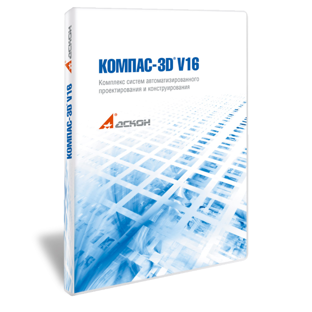

ГОЛОВНА
Методичний посібник по Компас 3D для студентів ІІ - VI курсу ППК НТУ"ХПІ"
З цього посібника ви дізнаетесь як користуватися програою КОМПАС - ГРФАФІК 3D

Універсальна система автоматизованого проектування
КОМПАС-Графік
КОМПАС-Графік - універсальна система автоматизованого проектування, що дозволяє в оперативному режимі випускати креслення виробів, схеми, специфікації, таблиці, інструкції, розрахунково-пояснювальні записки, технічні умови, текстові та інші документи.Спочатку система орієнтована на оформлення документації відповідно до ЕСКД, ЕСТД, СПДС та міжнародними стандартами, але цим можливості системи не обмежуються.
Гнучкість налаштування системи та велика кількість прикладних бібліотек і додатків дозволяють виконати практично будь-яке завдання користувача, пов'язану з випуском документації для всіх галузей. А підтримка поширених форматів (DXF, DWG, IGES і eDrawing) дає можливість організовувати ефективний обмін даними із суміжними організаціями і замовниками, що використовують будь-які креслярсько-графічні системи.
Можливості КОМПАС - ГРАФІК для машинобудування
При
створенні виробів в машинобудуванні і приладобудуванні використання 2D-систем
проектування все ще залишається актуальним.КОМПАС-Графік підходить для вирішення
будь-яких завдань, які не виконати з використанням 3D-систем. Можливо
проектування деталей і складальних одиниць на вироби, які відносяться до самих
різних підгалузей. Для цього в системі є:
·
різноманітні
способи і режими побудови графічних примітивів,
·
ортогональное
креслення,
·
використання
прив'язок,
·
використання
сітки,
·
управління
порядком відтворення графічних документів,
·
будь-які
стилі ліній, штриховок, текстів, численні способи проставляння розмірів і
технологічних позначень,
· автопідбір допусків і відхилень.
Робота
з багатолистовими кресленнями
При
проектуванні складних деталей і виробів часто необхідні креслення, що містять
більше одного аркуша. У КОМПАС-Графік ви зможете створити креслення з
будь-якої кількості аркушів. При цьому кожен лист може відрізнятися від
попередніх і наступних. Можливі такі варіанти настройки для кожного
листа:
·
формат,
·
кратність
формату,
·
орієнтація
формату (горизонтальна або вертикальна),
· стиль оформлення.
Оформлення
документації
Крім
креслень є необхідність оформляти і іншу необхідну документацію. Для
створення таких документів в системі є цілий ряд спеціалізованих інструментів,
який дозволить спростити процес створення наступних
документів:
·
креслення,
схеми і сповіщення,
·
сповіщення,
·
специфікації
і таблиці,
·
інструкції,
керівництва, розрахунково-пояснювальні записки, технічні умови, текстові та інші
документи.
Параметризація
типових елементів
При
2D-проектування в конструкціях можуть часто повторюватися різні типові
елементи. Креслити їх щоразу заново - трудомістка і, по суті, нікому не
потрібна робота. У КОМПАС-Графік ви зможете створити параметричні моделі
цих елементів і при необхідності користуватися напрацюваннями, розташовуючи їх в
кресленнях. Для таких завдань будуть корисні:
·
засоби
створення параметричних моделей,
·
інструменти
створення бібліотек типових фрагментів,
· швидкий доступ до типових текстів і позначенням.